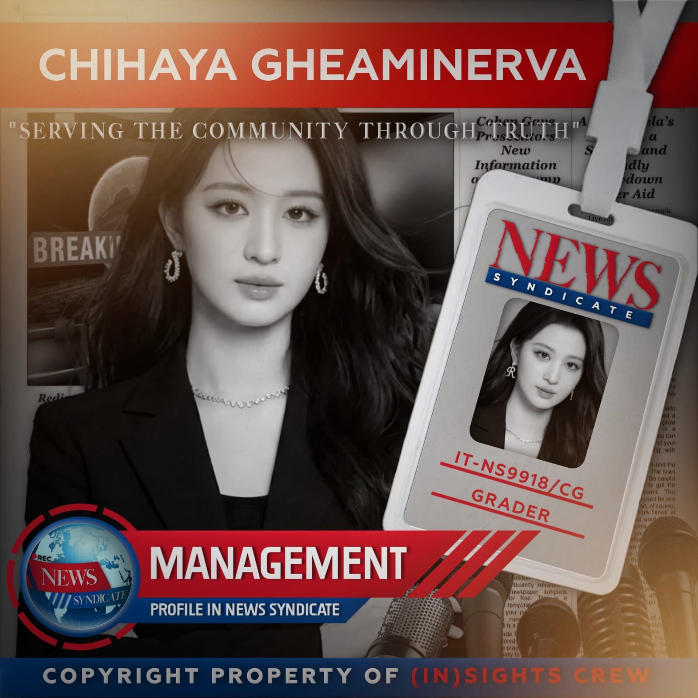
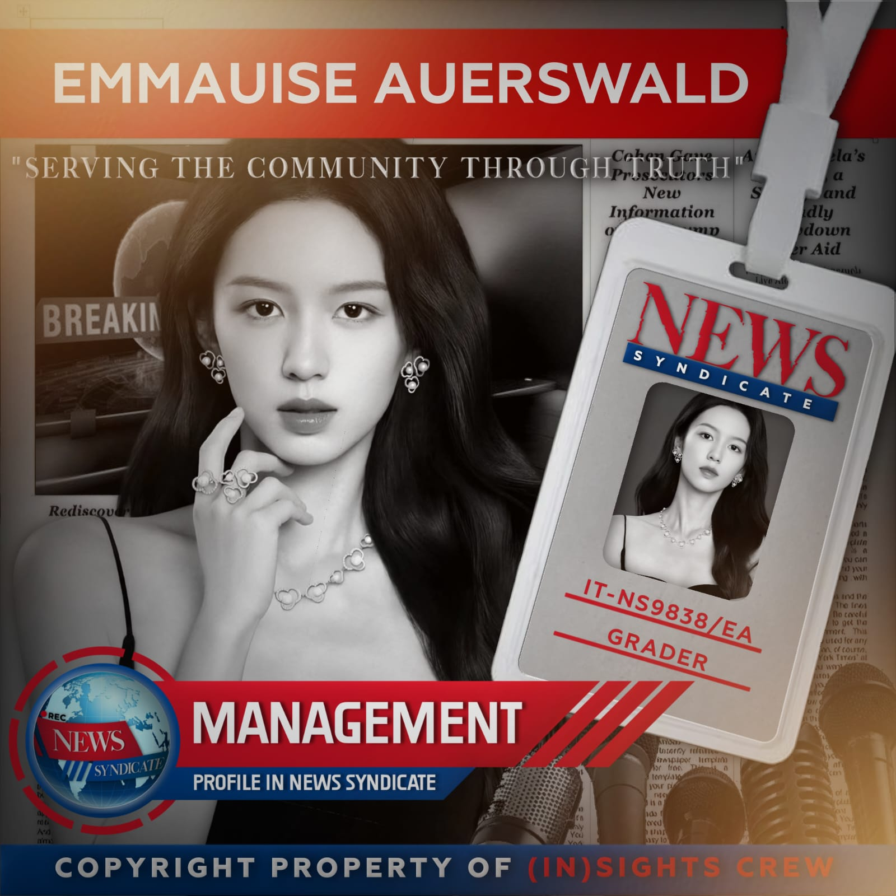

Membangun Kepercayaan Lewat Jurnalisme Berintegritas.
News Syndicate, atau yang kerap dikenal dengan nama NESIN merupakan grup Roleplay dengan sistematika Trainee dan Eliminasi. NESIN dibangun pada 18 Mei 2025 sebagai grup trainee yang mengusung pembawa berita sebagai konsep utamanya.
Visi Kami
Untuk mendidik generasi jurnalis yang kritis, bertanggung jawab atas setiap informasi yang disampaikan, dan konsisten dalam menjalankan tugas-tugas jurnalistik dengan beretika.
Misi Kami
- check_circle Membekali calon jurnalis dengan keterampilan jurnalisme digital, termasukk penulisan berita daring, dan penggunaan platform multimedia.
- check_circle Mendorong penyebaran informasi yang akurat dan bertanggung jawab.
- check_circle Mengajarkan etika komunikasi digital, seperti verifikasi sumber daring, anti-hoaks, dan kesadaran akan dampak setiap unggahan.
- check_circle Melatih calon jurnalis untuk membangun citra pribadi sebagai jurnalis yang kredibel dan informatif yang menjunjung tinggi etika jurnalistik.

Tim Redaksi Kami
Rune Scott
Tierizon Hellx
Benjamin Alexander Schumacher
Magdalene Bogdanov
Amerta Griselda

Chihaya Gheaminerva

Emmauise Auerswald
Pernyataan Standar Editorial
Di News Syndicate, kami menjunjung tinggi **Prinsip Jurnalisme Tanpa Kompromi**. Setiap artikel yang diterbitkan melalui proses verifikasi berlapis untuk memastikan kebenaran faktual.
Kami memisahkan secara tegas antara pelaporan berita (News Reporting) dan opini (Opinion Pieces). Transparansi adalah kunci; jika terjadi kesalahan, kami berkomitmen untuk melakukan koreksi secara cepat dan terbuka kepada publik.
"Kebenaran bukanlah pilihan, melainkan sebuah kewajiban moral yang kami emban setiap hari di ruang berita ini."
Hubungi Kami
Punya informasi penting atau pertanyaan? Tim kami siap mendengar dari Anda.
Email Redaksi
ofcnewssyndicate@gmail.com
Telepon
+62 831 9966 8713
Kantor Pusat
Rolepayer, Indonesia